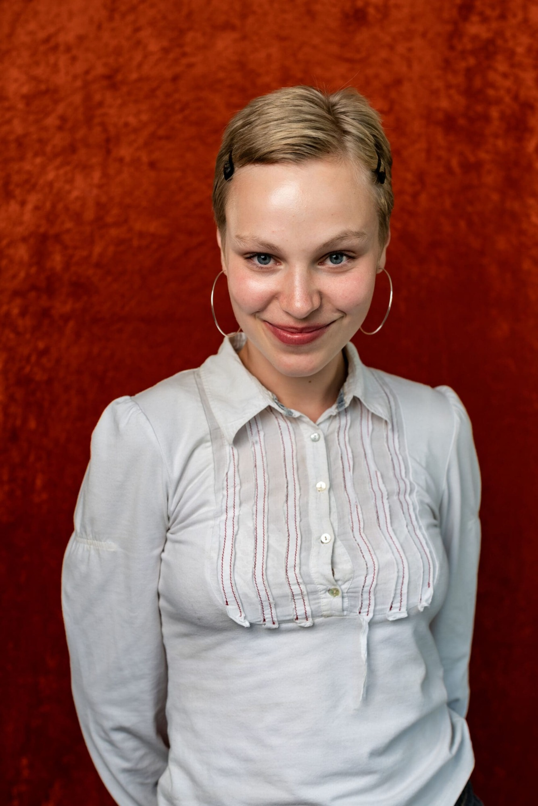
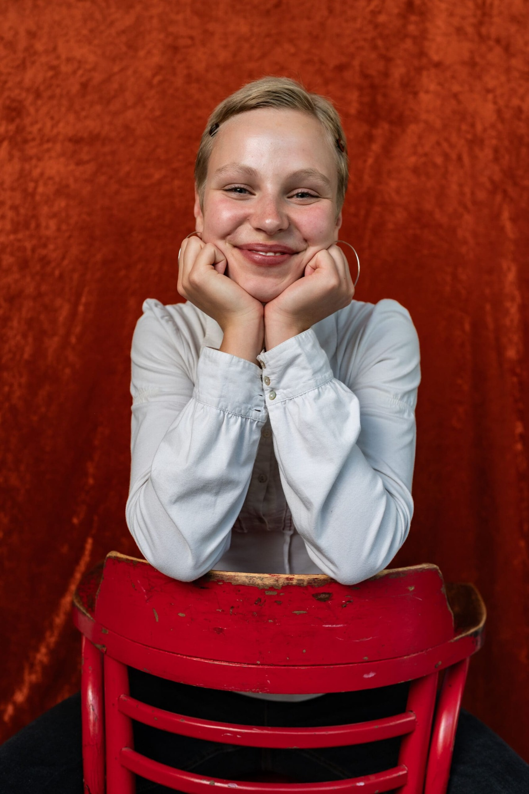
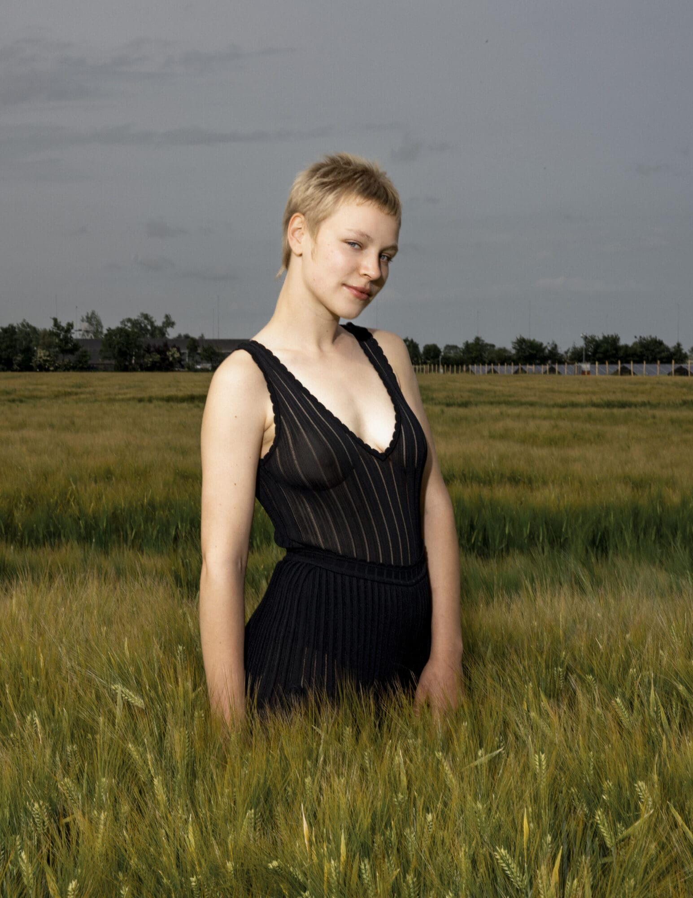

2022
Sihame
Charlene · dramaserie, NPO / KRO-NCRV
Regie: Shamira Raphaela & Lisette Donkersloot

Portret · 2025Actrice & theatermaker · Amsterdam
Eva Nova Gebbinck is actrice en theatermaker. Ze maakt werk vanuit persoonlijk materiaal en confronteert haar publiek op humoristische en brutale wijze. In 2025 studeerde ze af aan de acteursopleiding van de Hogeschool voor de Kunsten Utrecht. Haar afstudeervoorstelling Hierna zal ik een berg zijn… een simpele kutberg ontwikkelde en speelde ze in 2024.
Eva voor de camera
Portretfoto's van Eva, gedeeld via Acteursbelangen. Klik op een foto om het beeld te downloaden.

Download foto
Download fotoFoto's afkomstig van Acteursbelangen.
Theater · televisie · stem
Van eigenzinnig theater tot een rol in een Nederlandse dramaserie: Eva beweegt zich tussen podium, camera en stemwerk.
Charlene · dramaserie, NPO / KRO-NCRV
Regie: Shamira Raphaela & Lisette Donkersloot
Theatergroep Drang · acteur en educatief begeleider. Gemaakt vanuit improvisatie; met nagesprekken over radicalisering en polarisatie voor vmbo- en mbo-leerlingen.
Theatermaker / performer · met Yara Baas i.s.m. De Warme Winkel · eindregie Vincent Rietveld
Gespeeld tijdens 100 jaar VPRO
Theatergroep De Jonge Honden · acteur in een fysieke, ensemblegerichte voorstelling
Regie: Ine te Rietstap
Theater Oostpool JONG
Een simpele kutberg · afstudeersolo. Eigen concept en uitvoering, met een fysieke speelstijl · begeleiding Eva Zwart
Vrijwillig docent voor kinderen van 8–18 jaar · spel, expressie en persoonlijke ontwikkeling
Tessa Bailey · luisterboek, Rouze
Nederlands C2 · moedertaal
Engels C2
Duits B2
Frans B2
Accenten Achterhoeks
Zangstem Alt
Dans Ballet, jazz, modern
Instrumenten Gitaar, piano, ukelele
Sport Schermen, paardrijden, tennis, yoga
Kenmerken 169 cm · blauwe ogen · lichtblond haar
Volg Eva's werk & bekijk haar profiel
Meer foto's, video's en actuele profielinformatie vind je via Eva's professionele profielen.